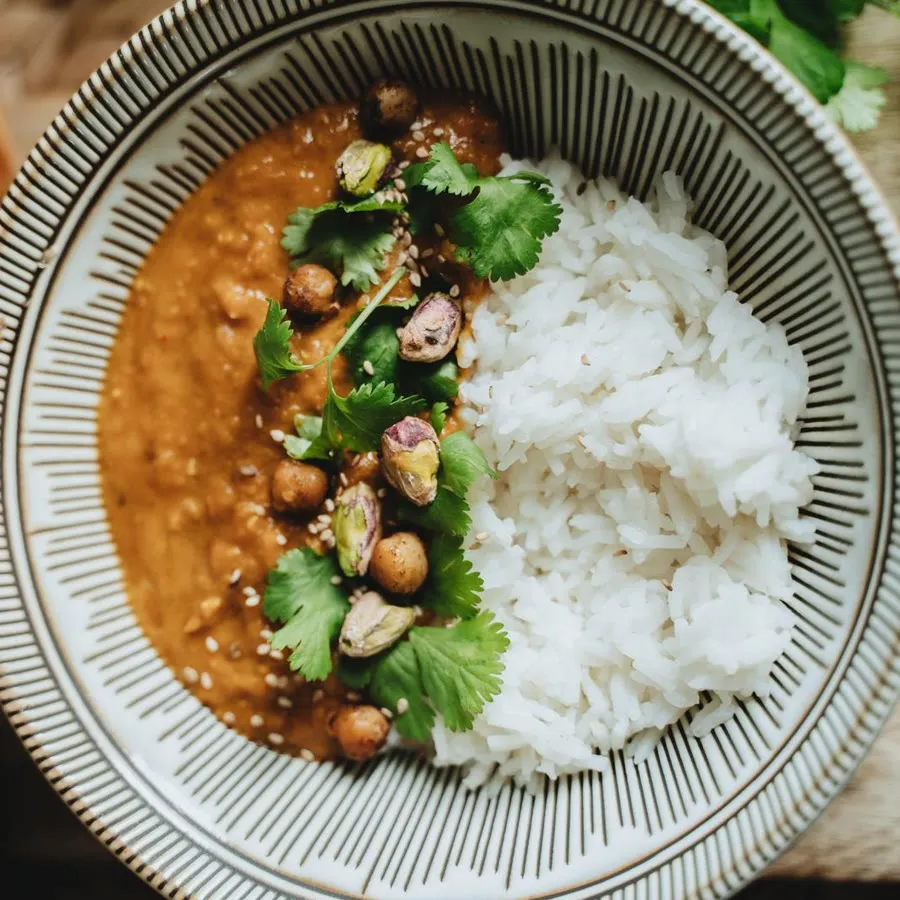
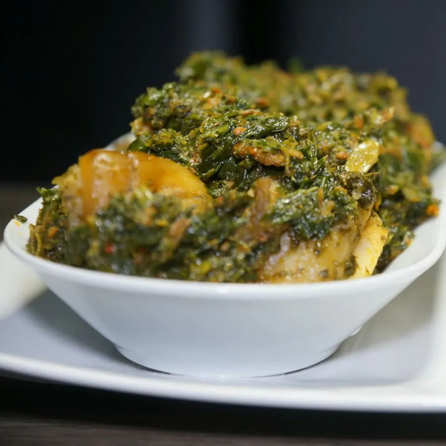
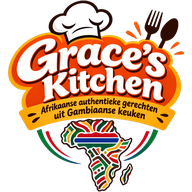

Altijd vers bereid
Grace kookt voor jouw bestelling. Geen bak uit de vriezer.
Gambiaanse thuiskeuken, omgeving Den Bosch
100% halal 06 87 54 81 55
Gambiaanse keuken · omgeving Den Bosch
Kies je gerecht


Grace kookt voor jouw bestelling. Geen bak uit de vriezer.
Een volle schaal met rijst of fufu, vlees en bijgerecht. Je eet je buik rond.
Al het vlees en de vis zijn halal. Daar hoef je nooit naar te vragen.
Zo bestel je
Kies uit het menu en bepaal je vlees: kip, vis of beef.
Naar 06 87 54 81 55, met je gerecht, aantal en gewenste dag.
Grace bevestigt je bestelling en spreekt tijd en plek met je af.
@gracekitchen_nl
Wat klanten zeggen
Eindelijk Jollof die smaakt zoals bij mijn moeder thuis. De kip was mals en de plantain precies goed gebakken. Ik bestel nu bijna elke week.
Nooit eerder Gambiaans gegeten. Grace legde via WhatsApp rustig uit wat ik moest kiezen. De Domoda is mijn nieuwe favoriet.
Egusi met fufu en beef, precies goed gekruid. Royale portie en netjes verpakt.
Fijn dat alles 100% halal is. Snel antwoord op mijn appje en de Okra soup was heerlijk.
Grace kookte voor onze verjaardag. Iedereen vroeg waar het eten vandaan kwam.
Catering en evenementen
Verjaardag, familiefeest of bedrijfsborrel: Grace kookt op maat voor je gasten.
Zet dit in je bericht

Hoi! Zin in Jollof, Egusi, Domoda of Okra soup? Stuur je bestelling of vraag, dan regelen we de rest.